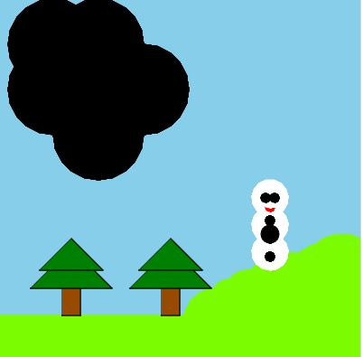
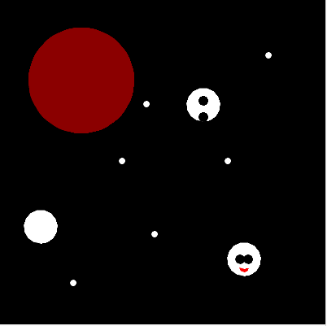
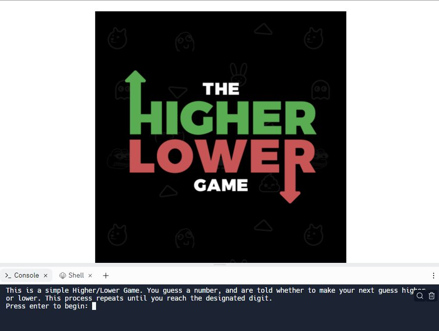
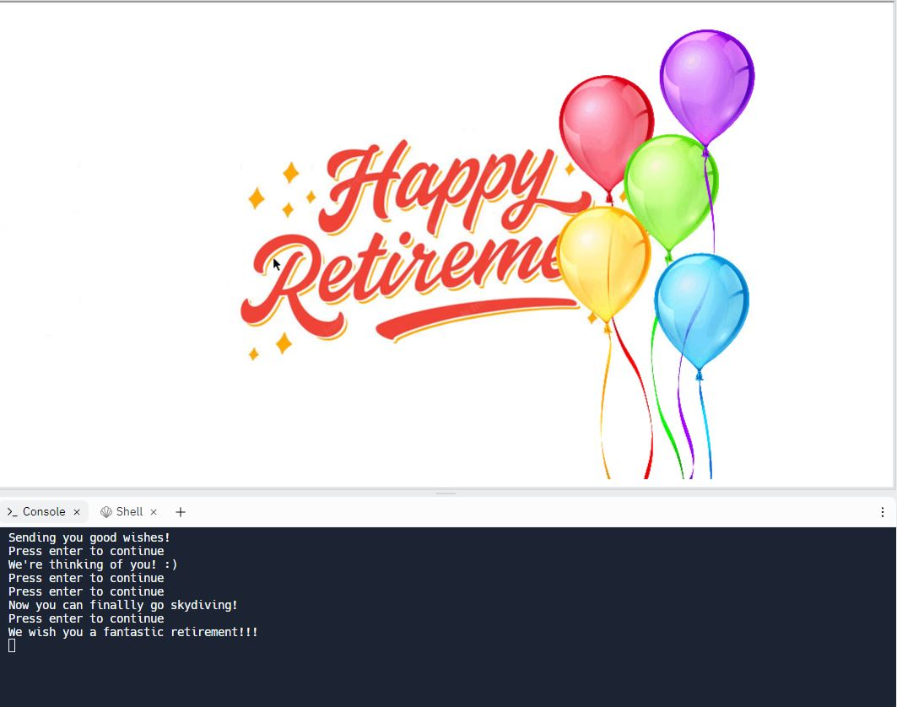
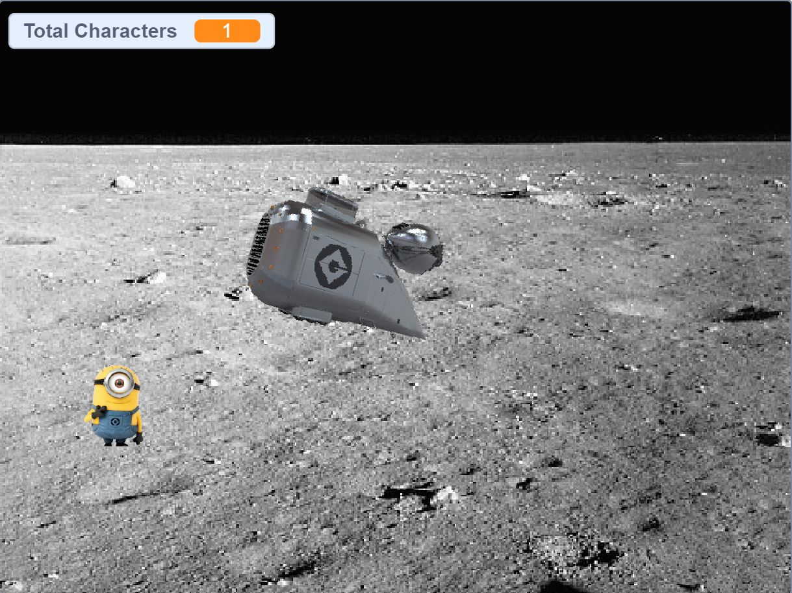

Home
Portfolio
About Me
Portfolio:

1.1.9 Project.


This project, named "Snowman Explosion", consisted of Frosty the Snowman being built into a grassy terrain and immediately hit by a meteor. This meteor explodes Frosty into three pieces, while sending him into space. In space, he floates over to Mars, where, because of the lack of an atmosphere, melts.

In the 1.2.5 Project, my parner and I created the "Higher or Lower Game". In this game, a contestant is told to set a maximum value, and begin guessing numbers that fall in the range. After each guess, the contestant is told whether to make their next guess higher or lower until they reach a designated number.

In the 1.3.1 Project, my partner and I created an E-Card for an individual in a retirement home. When you first open the card, a "Happy Retirement" message appears, with instructions to press the enter key when ready. This process repeats multiple times, each time with a different image and message, until one final one appears with the message. "We wish you a fantastic retirement!!!"

My partner and I created a game in Scratch in which a character from the Minions movie will randomly appear on the screen, and it is the player's job to guide a rocket towards it. Each time the rocket enters the character's hit-box, it will be "grabbed", and a counter will increase by one.
Interactive Fiction Rags to Riches.
Black Jack game written in Python.
Modified bits in pictures.
Use data files to create graphs.
Using netlogo do remix of illusions.
Interactive Fiction Rags to Riches.